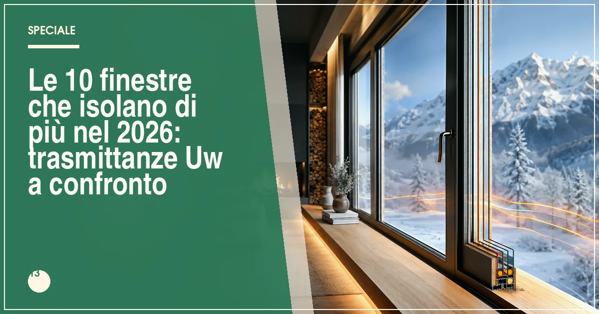

La finestra più isolante del 2026 è Internorm KF 520 con trasmittanza fino a Uw 0,62 W/m²K, seguita da Finstral FIN-Project (0,64) e Veka Softline 82 (0,66). Tutte le finestre in classifica rientrano nei limiti di trasmittanza richiesti dal bonus serramenti 2026.
In sintesi
- Il podio del risparmio energetico 2026: Internorm KF 520 (Uw 0,62), Finstral FIN-Project (0,64), Veka Softline 82 (0,66).
- Per il bonus 2026 serve un Uw inferiore ai limiti di zona climatica: tutti i sistemi in classifica li rispettano.
- Il triplo vetro con Ug 0,5-0,7 W/m²K è ormai lo standard dei sistemi più isolanti.
- Sostituire vecchi serramenti con Uw > 3,0 può tagliare le dispersioni del foro finestra anche del 60-70%.
- Prezzi: da circa 300 €/m² (Drutex) a oltre 900 €/m² (Internorm), posa esclusa.

Quando si parla di risparmio energetico, la finestra è il punto debole dell'involucro: attraverso i serramenti disperde fino al 25-30% del calore di un edificio non riqualificato. Sostituire una finestra anni Ottanta (Uw tipico 2,8-3,5 W/m²K) con un sistema moderno da 0,7 W/m²K significa ridurre le dispersioni del foro finestra di oltre il 70%, con benefici diretti su bolletta e comfort estivo e invernale.
Il parametro da guardare è la trasmittanza termica Uw, espressa in W/m²K: misura quanto calore attraversa un metro quadro di finestra completa (telaio + vetro) per ogni grado di differenza tra interno ed esterno. Più basso è il valore, migliore è l'isolamento. Attenzione a non confonderlo con Ug (il solo vetro) o Uf (il solo telaio): quello che conta per la legge e per il bonus è Uw.
Per questa classifica abbiamo raccolto i valori Uw minimi dichiarati dai produttori su finestra di riferimento 1230×1480 mm a un'anta, verificato la dotazione vetraria di serie e incrociato i prezzi di listino rilevati presso i rivenditori italiani a luglio 2026. Prima di scegliere, vale la pena leggere anche la nostra analisi sul decreto trasmittanza termica 2026 e sulla direttiva Case Green, che stanno ridisegnando i requisiti minimi degli edifici.
La classifica: le 10 finestre più isolanti del 2026
Internorm KF 520 — Uw 0,62 W/m²K, il primato assoluto
Il sistema in PVC-alluminio di punta del gruppo austriaco combina un profilo a 6 camere con tecnologia I-tec, triplo vetro da 48 mm di serie e guarnizioni su tre livelli: il risultato è un Uw fino a 0,62 W/m²K, valore da edificio in classe quasi-passiva. La versione con squadratura del vetro a filo anta migliora anche tenuta e acustica.
È la scelta per chi vuole il massimo senza compromessi: prezzi indicativi 550-900 €/m², ammortizzabili con il bonus 50% e con un risparmio energetico che in zona climatica E-F può superare i 300-400 euro l'anno per un appartamento medio.
- Uw fino a 0,62 W/m²K, il meglio del mercato
- Triplo vetro 48 mm di serie
- Ottima tenuta anche in zona ventosa
- Prezzo nella fascia più alta
- Tempi di consegna lunghi
Finstral FIN-Project — Uw 0,64 W/m²K e filiera integrata
L'altoatesina produce internamente profilo e vetro: il FIN-Project Cristallo con triplo vetro raggiunge Uw 0,64 W/m²K, con la particolarità del profilo in PVC con anima in alluminio esterna per la massima resistenza agli agenti atmosferici. La ferramenta a scomparsa è di serie.
Prezzi indicativi 450-750 €/m²: considerando la qualità costruttiva e la rete di showroom diretti, è il miglior rapporto tra isolamento e investimento del 2026.
- Uw 0,64 con vetro prodotto in casa
- Ferramenta a scomparsa di serie
- Rete diretta per assistenza e ricambi
- Estetica tecnica, poche finiture spinte
- Listini variabili tra showroom
Veka Softline 82 — Uw 0,66 W/m²K dal profilo tedesco
Il sistema a 7 camere da 82 mm di profondità, trasformato in Italia da centinaia di serramentisti, raggiunge Uw 0,66 W/m²K con triplo vetro Ug 0,5. È la dimostrazione che un ottimo isolamento non richiede necessariamente il marchio premium: molto dipende dalla scelta del vetrario e dalla cura del trasformatore.
Prezzi indicativi 350-600 €/m². Consiglio: chiedete sempre la dichiarazione Uw del sistema completo e non solo del profilo.
- 7 camere e 82 mm di profondità
- Prezzo molto competitivo per le prestazioni
- Ampia scelta di serramentisti trasformatori
- Prestazioni finali legate al trasformatore
- Vetro spesso optional da pagare a parte
Drutex Iglo Energy — Uw 0,68 W/m²K, il campione low-cost
Il sistema polacco a 7 camere con triplo vetro di serie dimostra che l'efficienza energetica è ormai accessibile: Uw fino a 0,68 W/m²K a prezzi indicativi di 300-500 €/m², i più bassi della classifica. Profilo in classe A e rinforzi in acciaio zincato completano un'offerta molto solida per la fascia.
Ideale per grandi interventi a budget controllato, come condomini e seconde case, dove il costo al metro quadro pesa di più del brand.
- Miglior prezzo della Top 10
- Triplo vetro di serie
- Uw 0,68 con profilo classe A
- Rete assistenza meno capillare in Italia
- Finiture e ferramenta meno raffinate
Schüco LivIng — Uw 0,71 W/m²K con ingegneria tedesca
Il sistema PVC a 7 camere di Schüco, con profondità 82 mm e guarnizione centrale saldata, arriva a Uw 0,71 W/m²K. Il valore aggiunto è la precisione costruttiva: tenute aria classe 4 e permeabilità all'acqua ai vertici, fondamentali per mantenere nel tempo le prestazioni energetiche dichiarate.
Prezzi indicativi 400-700 €/m² tramite serramentisti partner certificati. Per chi cerca anche scorrevoli e facciate coordinate, l'ecosistema Schüco è un plus concreto.
- Tenute aria-acqua ai vertici
- Ecosistema integrato con scorrevoli
- Ottima stabilità dimensionale
- Rete partner da verificare zona per zona
- Design più tecnico che decorativo
Oknoplast Prolux Evolution — Uw 0,80 W/m²K, design e sostanza
Il sistema di punta del gruppo polacco raggiunge Uw 0,80 W/m²K con profilo a 7 camere e triplo vetro, puntando su un'estetica squadrata e contemporanea con ferramenta a scomparsa. Non il valore più basso in assoluto, ma un ottimo compromesso per chi vuole isolamento, look curato e rete capillare a 380-650 €/m² indicativi.
Aluprof MB-104 Passive — Uw 0,53 W/m²K sulle vetrate fisse
Nel mondo dell'alluminio, il sistema certificato Passive House di Aluprof è il riferimento: sulle vetrate fisse dichiara Uw fino a 0,53 W/m²K, mentre l'anta apribile si attesta intorno a 0,80-0,90 W/m²K con triplo vetro. Per chi sceglie l'alluminio e non vuole rinunciare all'efficienza estrema, è la prima scelta. Prezzi indicativi 600-1.100 €/m².
Reynaers MasterLine 8 — Uw 0,78 W/m²K con profili minimi
Il sistema belga in alluminio a taglio termico spinto unisce Uw fino a 0,78 W/m²K a nodi a vista ridottissimi, il che lo rende il favorito degli architetti per grandi vetrate efficienti. La versione HI+ con isolante aggiuntivo migliora ulteriormente le prestazioni. Prezzi indicativi 600-1.200 €/m², fascia alta giustificata da design e ingegneria.
Metra NC 75 I — Uw 0,80 W/m²K, l'alluminio italiano efficiente
Il sistema a taglio termico dell'azienda veneta, con profondità 75 mm e barrette in poliammide rinforzata, raggiunge Uw fino a 0,80 W/m²K con triplo vetro: prestazioni notevoli per un profilo metallico, con il vantaggio di finiture e ossidazioni di pregio tutte italiane. Prezzi indicativi 500-900 €/m².
Ponzio PE78N — Uw 0,85 W/m²K, la solidità dello storico marchio piemontese
Chiude la Top 10 il sistema in alluminio da 78 mm di Ponzio, che con triplo vetro arriva a Uw 0,85 W/m²K: ampiamente entro i limiti del bonus e con una lavorabilità apprezzata dai serramentisti, che si traduce in posa accurata e prezzi contenuti per l'alluminio, indicativamente 450-750 €/m².
Tabella comparativa: trasmittanze e prezzi delle 10 finestre
| Sistema | Materiale | Uw min (W/m²K) | Vetro consigliato | Prezzo indicativo (€/m²) |
|---|---|---|---|---|
| Internorm KF 520 | PVC-alluminio | 0,62 | Triplo 48 mm, Ug 0,5 | 550–900 |
| Finstral FIN-Project | PVC-alluminio | 0,64 | Triplo, Ug 0,5 | 450–750 |
| Veka Softline 82 | PVC | 0,66 | Triplo, Ug 0,5 | 350–600 |
| Drutex Iglo Energy | PVC | 0,68 | Triplo di serie | 300–500 |
| Schüco LivIng | PVC | 0,71 | Triplo, Ug 0,6 | 400–700 |
| Reynaers MasterLine 8 | Alluminio | 0,78 | Triplo basso-emissivo | 600–1.200 |
| Oknoplast Prolux Evolution | PVC | 0,80 | Triplo, Ug 0,6 | 380–650 |
| Metra NC 75 I | Alluminio | 0,80 | Triplo basso-emissivo | 500–900 |
| Ponzio PE78N | Alluminio | 0,85 | Triplo basso-emissivo | 450–750 |
| Aluprof MB-104 Passive | Alluminio | 0,53 (fisse) / 0,80 (anta) | Triplo 52 mm | 600–1.100 |
Nota metodologica: valori Uw minimi dichiarati dai produttori su finestra di riferimento 1230×1480 mm; le prestazioni reali dipendono da dimensioni, vetro e canalino. Prezzi indicativi rilevati a luglio 2026, posa esclusa.
Come si legge la trasmittanza termica: Uw, Ug e Uf spiegati bene
Uw: il valore che conta
La trasmittanza Uw descrive l'intera finestra, telaio più vetro, ed è il valore citato dal decreto requisiti minimi e richiesto per il bonus. Una finestra moderna efficiente sta sotto 1,1 W/m²K; sotto 0,9 si entra nel territorio dell'alta efficienza; sotto 0,8 si parla di serramenti da edifici NZEB o passivi.
Ug e Uf: i componenti del risultato
Ug è la trasmittanza del solo vetro: un doppio basso-emissivo con argon vale 1,0-1,1, un triplo arriva a 0,5-0,7. Uf è quella del telaio: nel PVC a 6-7 camere scende sotto 1,0, nell'alluminio a taglio termico si ferma a 1,3-2,0. Il vetro copre il 70-80% della superficie: per questo il triplo vetro fa la differenza.
Quale Uw serve per il bonus 2026
Il decreto fissa limiti diversi per zona climatica: indicativamente da 1,00 W/m²K nelle zone più fredde (E-F) a 1,40 W/m²K nelle zone A-B. Tutti i sistemi della Top 10 rispettano anche il limite più severo. I dettagli aggiornati sono nel nostro articolo sul decreto trasmittanza 2026.
Quanto si risparmia davvero sostituendo le finestre
Il conto in bolletta
Sostituendo serramenti con Uw 2,8-3,5 con sistemi da 0,7-0,9 W/m²K, le dispersioni del foro finestra si riducono del 60-70%. Per un appartamento di 100 m² in zona climatica E, il risparmio stimato è di 250-450 euro l'anno tra riscaldamento e raffrescamento, a seconda dell'esposizione e della caldaia. Il comfort migliora subito: spariscono spifferi, condensa e pareti fredde.
Il ruolo della posa e del bonus
Le prestazioni dichiarate valgono solo con una posa a regola d'arte secondo la norma UNI 11673: un giunto sbagliato può vanificare metà del beneficio. Con la detrazione del 50% del 2026, il tempo di ritorno dell'investimento scende tipicamente sotto i 7-9 anni, contro i 15-18 senza incentivo.
Domande frequenti su finestre e risparmio energetico
Qual è la finestra più isolante del 2026?
Secondo la classifica Infissi Media 2026, la finestra più isolante è Internorm KF 520, con trasmittanza fino a Uw 0,62 W/m²K grazie al profilo a 6 camere e al triplo vetro da 48 mm di serie. Seguono Finstral FIN-Project (0,64) e Veka Softline 82 (0,66).
Quale valore Uw serve per il bonus serramenti 2026?
Il valore Uw deve essere inferiore ai limiti del decreto requisiti minimi, che variano per zona climatica: indicativamente 1,00 W/m²K nelle zone E-F, 1,20 in zona D e fino a 1,40 nelle zone A-B. Tutte le finestre della Top 10 rispettano anche il limite più restrittivo.
Meglio doppio o triplo vetro per risparmiare?
Il triplo vetro (Ug 0,5-0,7) riduce le dispersioni del 30-40% rispetto a un doppio basso-emissivo (Ug 1,0-1,1) e migliora anche l'acustica. Il sovrapprezzo, indicativamente 60-120 €/m², si ripaga in pochi anni nelle zone climatiche E e F; al Sud un buon doppio vetro può bastare.
Quanto si risparmia in bolletta cambiando le finestre?
Sostituendo finestre con Uw superiore a 2,8 con sistemi da 0,7-0,9 W/m²K si riducono le dispersioni del foro finestra del 60-70%. Per un appartamento di 100 m² in zona climatica E il risparmio stimato è di 250-450 euro l'anno; con il bonus 50% l'investimento si ripaga tipicamente in 7-9 anni.